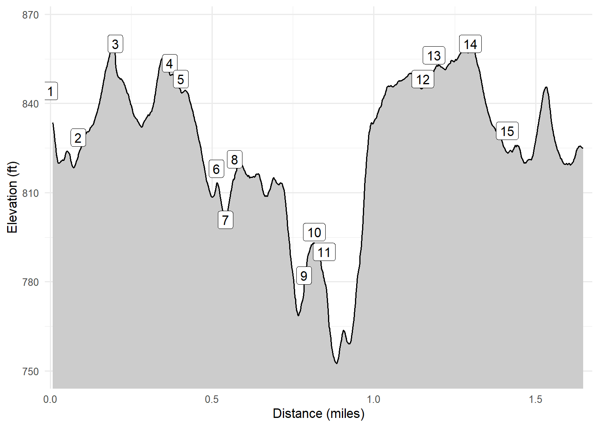

Osborne County Park
North Side
After walking the short trails along the Volga River in the south side of Osborne Park, Cash and I decided to walk the trails on the north side that wound through a disc golf course, archery range, an old quary, and an old cemetary. This was a nice mix of prairie, hardwoods, river bottoms, and area around a constructed pond. Overall, a nice hike with still more trails to explore. It was a very warm March day (83F)!
Walk-Specific Map
Take Note
- Click on a segment to get specific information.
- Numeric labels correspond to the same labels in the elevation profile and summary information below.
Elevation Profile

Images

IAOSBN98: Old quarry

IAOSBN08: Typical scenery Winter 2025

IAOSBN07: Cash

IAOSBN07: Typical scenery Winter 2025

IAOSBN05: Typical scenery Winter 2025

IAOSBN02: Typical scenery Winter 2025
GPX Download
A sanitized GPX file of our hike is here.
Summary Information
| NUM | trackID | Primary | Description | Type | Distance | CumDist | DeltaElev |
|---|---|---|---|---|---|---|---|
| 1 | IAOSBN01 | Osborne Park North | North parking area to | Trail | 0.09 | 0.09 | -16 |
| 2 | IAOSBN03 | Osborne Park North | to | Trail | 0.11 | 0.20 | 32 |
| 3 | IAOSBN04 | Osborne Park North | to | Trail | 0.17 | 0.37 | -7 |
| 4 | IAOSBN06 | Osborne Park North | to | Trail | 0.03 | 0.40 | -5 |
| 5 | IAOSBN07 | Osborne Park North | to | Trail | 0.11 | 0.51 | -30 |
| 6 | IAOSBN99 | Osborne Park North | to Old quarry | Trail | 0.03 | 0.54 | -17 |
| 7 | IAOSBN99 | Osborne Park North | Old quarry to | Trail | 0.03 | 0.57 | 17 |
| 8 | IAOSBN09 | Osborne Park North | to | Trail | 0.21 | 0.78 | -39 |
| 9 | IAOSBN98 | Osborne Park North | to Cord Cemetary | Trail | 0.03 | 0.82 | 15 |
| 10 | IAOSBN98 | Osborne Park North | Cord Cemetary to | Trail | 0.03 | 0.85 | -15 |
| 11 | IAOSBN08 | Osborne Park North | to | Trail | 0.30 | 1.15 | 61 |
| 12 | IAOSBN06 | Osborne Park North | to | Trail | 0.03 | 1.19 | 5 |
| 13 | IAOSBN05 | Osborne Park North | to | Trail | 0.11 | 1.30 | 5 |
| 14 | IAOSBN03 | Osborne Park North | to | Trail | 0.11 | 1.41 | -32 |
| 15 | IAOSBN02 | Osborne Park North | to North parking area | Trail | 0.25 | 1.66 | -1 |